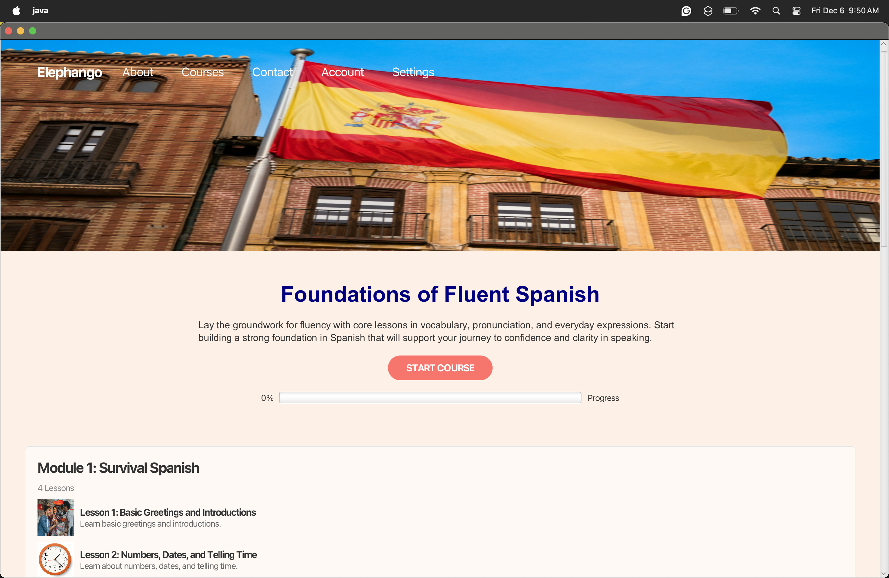

Problem Statement

Maintaing focus during the digital age of content has been an ongoing problem.
Affinity Diagram

This affinity diagram shows the affected groups, effects, and possible solutions for digital distractions.
Affinity Sketches

These sketches provide us with an overview of what the flow application would look like. It is intended to be minimalistic to dismiss uneccessary distractions.
Prototype

This is a paper prototype that will show us an example of how a user would navigate throughout the app. It maintains an easy and minimalistic interface to align with the apps goal.
Elephango Language App

This is a language learning application designed and developed by my team in our CSCE 247 class. It provides functionality for signing up users, logging in users if their account exists, tracking their course progression, and many more features.
Design Pattterns
This is a github repository that implements popular design patterns commonly used in projects and applications.